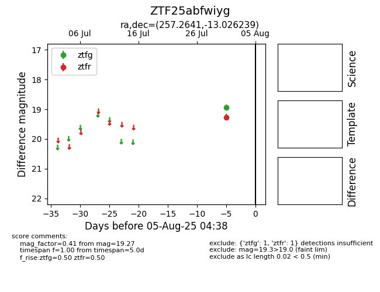

Target ZTF25abfwiyg at 2025-08-05 04:38, see:
FINK: fink-portal.org/ZTF25abfwiyg
Lasair: lasair-ztf.lsst.ac.uk/objects/ZTF25abfwiyg
ALeRCE: alerce.online/object/ZTF25abfwiyg
alt names
ZTF25abfwiyg (ztf,fink)
coordinates:
equatorial (ra, dec) = (257.2641,-13.02624)
galactic (l, b) = (8.8602,+15.77231)
photometry
last ztfg=18.94, ztfr=19.27
1 ztfg, 1 ztfr detections
